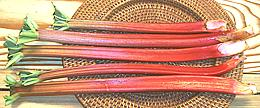
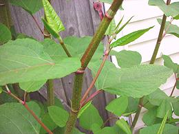

SAFARI
Users
Common Buckwheat
[Gretchka (Russia), Fagopyrum esculentum]
These tiny three sided pyramidal seeds, about 0.15 inches long, are incorrectly called "kasha" in the U.S. - in Russia "kasha" is any grain cooked to a porridge consistency. Buckwheat was so important to Russians that an early Russian Olympic team, when they found they couldn't get grechnevaya kasha in Paris, packed up and went home.
Buckwheat is sold as "groats", the edible part of the seed after the fibrous hull has been removed. The photo shows roasted groats to the left, the way they're usually sold in the U.S. and unroasted to the right (purchased from a Korean grocery in Los Angeles). Buckwheat is also sold ground into flour, which is mixed with wheat flour to make buckwheat pancakes in the U.S. and soba noodles in Japan. Buckwheat greens are toxic to humans, but sprout enthusiasts do sprout the seeds and eat them at four to five days of growth. Buckwheat is also sprouted and malted to make gluten free beer for those allergic to gluten. Details and Cooking
The somewhat more bitter Tartary Buckwheat Fagopyrum tataricum
is still cultivated as a food crop in the Himalayan region.
Rumex - Sorrels / Docks
This genus contains some 200 species, most of which are edible, but only a few are actually much eaten. Some are used medicinally.
Garden Sorrel / Dock[Spinach dock; Shchavel (Russia, Ukraine); Rugstyne (Lithuania); Macris, Stevie (Rumania); Szczaw (Poland); Azeda (Portugal); Kuzu Kulagi (Turkish); Rau Chua (Viet-American); Ambada Bhaji, Gongoora (India), Rumex acetosa]
Sorrel grows wild over much of Europe and is a common crop there.
Despite being called for by many recipes, it is of very limited
availability here in Southern California, probably because it is
so perishable. Sorrel's taste is almost exactly that of the unrelated
Wood Sorrel. As with
spinach, sorrel's tartness is provided by oxalic acid.
Details and Cooking.
French Sorrel[Buckler sorrel, Shield-leaf sorrel; Szczaw Tarczolistny (Poland); Rumex scutatus]
This Sorrel is native Europe, and is used primarily in France and
Poland. It is most often used in salads, but sometimes for sorrel
sauces and other culinary uses, similarly to Garden Sorrel. As with
spinach, sorrel's tartness is provided by oxalic acid.
Photo by Jerzy Opiola distributed under license
Creative Commons
Attribution ShareAlike v4.0 International.
Broad-Leaved Dock [Butter dock, Bluntleaf dock; Rumex obtusifolius]
[Butter dock, Bluntleaf dock; Rumex obtusifolius]
This Sorrel is native Europe, but now also found in North America,
Australia and New Zealand. It was once used to wrap farmhouse butter
to keep it fresh. The leaves are used in Salads, cooked like Spinach
and as an herb in making vegetable stocks. Seeds are used as a spice,
and in Romania are sometimes used as the wrapping for Dolma. As with
spinach, sorrel's tartness is provided by oxalic acid.
Photo by Christian Hummert distributed under license
Creative Commons
Attribution ShareAlike v2.5 Generic.
Arizona Dock[Canaigre dock, Ganagra, Wild Rhubarb, Tanner's dock; Rumex hymenosepalus syn. Rumex arizonicus]
Native to the southwest quarter of the United States and to northern
Mexico, this plant was once cultivated for its roots, used in tanning
leather. Young leaves and stems are eaten raw or cooked, and older
stems are cooked as Rhubarb would be. As with spinach, sorrel's
tartness is provided by oxalic acid.
Photo by Stan Shebs distributed under license
Creative Commons
Attribution ShareAlike v3.0 attribution required.
Other RumexRumex is a large genus and there are other Sorrels / Docks that are used to a lesser extent for culinary purposes. Among these are: Sheep's Sorrel - R. acetosella - garnish and salad green. Curly Dock - R. crispus - salad green. Patience Dock, Garden Patience - R. patientia - Spring leaf vegetable in Southeastern Europe. |
Mountain Sorrel
[Alpine Sorrel; Aveluk (Armenia); Oxyria digyna]
This plant is native to the Arctic tundra, and in mountainous regions
farther south. Sour tasting and high in vitamin C, It has been important
to the Inuit to prevent scurvy. It is also appreciated in Armenia where
it is used for both food and medicinal purposes. The photo specimens are
braids of leaves from Armenia. The reason for the braids is that they
are hung up to dry, and as they dry ferment some, improving the flavor.
They are soaked, washed, chopped and cooked for use in salads or as a
vegetable flavoring in bulgur pilafs and the like.
Rhubarb
 [pie plant, Rheum rhabarbarum and Rheum rhaponticum]
Native to northern Central Asia, rhubarb has a long medicinal history but
use as food did not begin until sugar became affordable in 17th century
England. It is primarily used for pie filling and combined with
strawberries for jam. Only the leaf stems (petioles) are used, the leaves
containing so much oxalic acid they are considered toxic - though you'd
probably have to eat about 10 pounds to kill you. The photo specimen
stalks are medium size at about 16 inches long.
Noble Rhubarb
[Sikkim rhubarb; Chuka; Rheum nobile]
Native to the Hymalayan region at altitudes of 13,000 to 26,000 feet,
this rhubarb has evolved a unique strategy for success. The flowering
stem is covered by translucent leaves that pass low frequency light but
block damaging high altitude ultraviolet. This both protects the
flowering stem and creates a warm greenhouse effect for development of
its fruit. The mildly acidic hollow stems are eaten by people in the
region, and also contain a lot of drinkable water.
Photo by Bill Baker, Royal Botanic Gardens, Kew / Tyger
distributed under license Creative Commons
Attribution ShareAlike v3.0.
Syrian Rhubarb
[Ribes (Regional languages - variously spelled); Xanjil hagar, Isxun (Armenian); Isgin, Isgun (Turkey); Yagmi (Syriac); Cukri (Dari); Currant-fruited Rhubarb, Rhubarb of Babilonia; Rheum ribes]
This wild rhubarb is native to temperate and subtropical Western Asia
(Turkey to Pakistan) in rocky environments between 3300 and 13,000 feet
altitude. The most widely eaten part is the mildly acidic flowering stem.
It can be eaten raw or cooked with eggs or in a stew. The leaves and leaf
stems are also used in salads in some regions. The plant is gathered in
the wild and sold in local markets. The roots are perennial and send up
new leaves and flowering stalks, which can be a little over 3 feet tall.
As are all rhubarbs, this is considered a medicinal plant.
Photo by Maahmaah contributed to the public domain.
Seagrape
[Baygrape; Coccoloba uvifera]
While most used as a landscaping plant in Florida and the Caribbean, this
plant also produces edible fruit in grape like clusters. The green fruits
turn reddish when ripe, are tasty and can be eaten fresh. They are also used
to make jellies and jams, and fermented into wine, which in turn may be
fermented into seagrape vinegar for use in cooking.
Photo by Forest &
Kim Starr distributed under license
Creative Commons
Attribution ShareAlike v3.0 attribution required.
Madimak
[Indian Knotgrass; Polygonum cognatum]
Native to Turkey, Georgia, Iran, Afghanistan and Pakistan this weedy
creeping herb produces relatively large leaves. It is cultivated in
Central Anatolia (Turkey) for use in the cuisine of that region.
Photo from http://www.uyanangenclik.com/ used under fair
use doctrine (small, non-commrcial, non-competitive, otherwise
unavailable).
American Bistort
[Western Bistort, Smokeweed, Mountain meadow knotweed; Polygonum bistortoides]
This plant was an important food item for American Indians in the Mountain
West. The roots can be eaten raw or roasted and have a flavor resembling
chestnuts. The seeds can be ground to make bread or cracked and cooked
into porridge or the like.
Photo by Dawn Endico licensed under Creative Commons
Attribution-ShareAlike 2.0 Generic.
Japanese Knotweed
 [Itadori (Japan); Fallopia japonica]
Along with the closely related Giant Knotweed (F. sachalinensis).
this plant is most known as an aggressive invasive, though it is favored by
beekeepers for honey production. In Japan, tender shoots and young leaves
are eaten. The shoots look much like asparagus but they require peeling
and special preparation to reduce the oxalic acid. They are also pickled,
using a natural process of sea salt with nigari (magnesium choloride).
Japanese and Giant Knotweed are now getting attention as a major source of
Resveratrol, the anti-aging ingredient in red grape skins. The supplement
industry prefers knotweed because it grows year round and in many climates.
Photo by unknown, contributed to the public domain.
Health & Nutrition
Sorrel and Rhubarb are made tart by oxalic acid, a substance that inhibits absorption of calcium and some other nutrients by the body. In the case of rhubarb, the acid level is so high in the leaves they are not used, only the leaf stems. Oxalic acid can contribute to formation of kidney stones and gout, but is only one of many contributing factors and probably not the strongest. Because these vegetables are generally consumed infrequently and in small quantity the oxalic acid content should not be a problem. The main health problem with rhubarb is that it is usually cooked with lots of sugar, a truly dangerous ingredient.
Buckwheat greens are toxic to humans, causing a number of symptoms including extreme skin sensitivity to sunlight. Sprout enthusiasts do eat buckwheat sprouts at 4 to 5 days and they seem to be OK, at least in modest quantities.